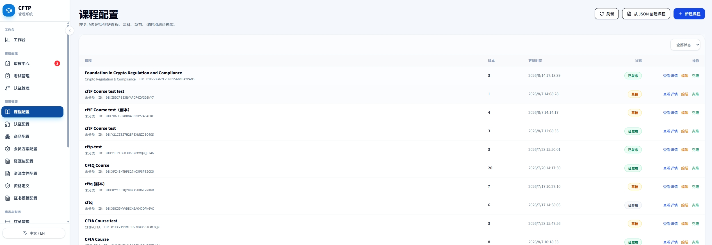
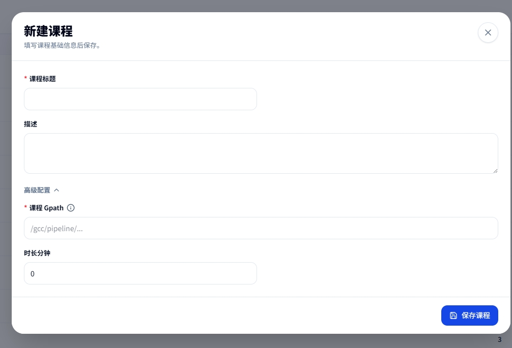
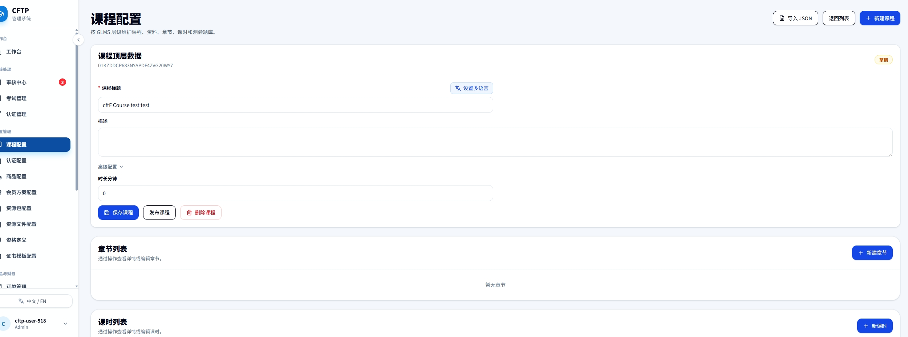

课程配置使用手册
面向管理后台运营人员，说明课程的创建、内容维护、JSON 复用、版本管理和发布操作。
1. 功能概览
“课程配置”维护一门课程本身的学习内容。认证的阶段、价格、前置资格、免考和发证规则不在这里配置，它们分别属于“认证配置”和“商品配置”。

assets/course/course-list.png2. 先理解这些概念
课程 GPath
课程业务系列的稳定标识，用来把同一门课程的不同版本关联起来。它不是课程标题，也不是文件地址。
课程 ID / ULID
某一个具体课程版本的唯一技术 ID，由系统生成。日常配置不需要手工填写。
版本
同一 GPath 下的版本号。克隆课程会创建同一门课程的新草稿版本。
状态
草稿可继续配置；已发布可供认证引用；已弃用是历史版本，不应继续用于新配置。
课程 GPath 应该怎么填
| 规则 | 说明 | 示例 |
|---|---|---|
必须以 / 开头 | 使用分段路径表达业务归属。 | /courses/fcrc-foundation |
| 只使用小写字符 | 允许小写英文字母、数字、连字符 -、下划线 _ 和斜杠。 | /courses/cfta-level-1 |
| 新课程使用新 GPath | 不同课程不得共用 GPath，即使标题相似也要分开。 | A 与 B 使用不同路径 |
| 升级版本沿用 GPath | 通过“克隆”创建同一课程的新版本时，系统自动沿用原 GPath。 | v1、v2 共用一个 GPath |
| 最长 255 个字符 | 建议保持简短、稳定，不写版本号、日期或人员姓名。 | 不要写 -v2 或 -2026 |
course_gpath，否则会与原课程系列发生冲突。3. 新建课程
适用于从空白开始创建一门独立课程。点击页面右上角“新建课程”。

assets/course/course-create.png| 字段 | 是否必填 | 填写说明 |
|---|---|---|
| 课程标题 | 必填 | 考生端和管理后台显示的课程名称。建议使用正式、可识别的名称。 |
| 描述 | 选填 | 说明课程目标、适用对象和内容范围。不要在这里填写内部备注。 |
| 课程 GPath | 必填 | 系统会随标题生成建议路径。新课程确认唯一即可，通常不要手动改成其他课程的路径。 |
| 时长分钟 | 选填 | 课程预计总学习时长，使用非负整数；未知时可以暂填 0，发布前补齐。 |
- 填写课程标题和描述标题应与对外课程名称一致。
- 展开“高级配置”检查 GPath确认是新路径，且不含大写字母、空格或中文。
- 填写课程时长按全部课时的预计学习时间汇总。
- 点击“保存课程”系统先创建草稿，随后进入课程详情继续配置内容。
4. 列表页按钮和操作
刷新
重新读取课程列表。其他管理员刚完成操作，或状态未及时更新时使用。
从 JSON 创建课程
把符合课程导入格式的 JSON 创建为新课程。适合复制既有课程结构后再调整。
新建课程
从空白草稿开始创建一门新课程。
查看详情
查看课程完整字段和可复制的课程 JSON，不直接修改数据。
编辑
进入课程详情，维护基础信息、章节、课时、资料和测验。
克隆
创建同一课程的新草稿版本，沿用原 GPath 和内容。不要用它创建另一门独立课程。
course_gpath。5. 维护课程内容
课程草稿创建后，按章节、课时、资料和测验逐层维护。先建立章节，再把课时和章节测验挂到正确章节。

assets/course/course-content.png章节与课时
| 对象 | 作用 | 配置要点 |
|---|---|---|
| 章节 | 组织课程内容的一级目录。 | 填写标题和排序；建议先创建全部章节，再逐一添加课时。 |
| 课时 | 考生实际学习的内容单元。 | 选择所属章节、标题、排序和课时类型，再填写正文或上传对应资源。 |
两类课程资料
| 类型 | 考生端用途 | 何时使用 |
|---|---|---|
| 候选端辅助资料 | 显示在考生端“课程资料 / Supplementary Materials”列表。 | 按章节提供文章、视频、PDF 或外部链接时使用。优先通过单条表单维护。 |
| 普通文件资料 | 课程级文件资源。 | 提供下载文件或课程附件时使用，不等同于候选端辅助资料列表。 |
supplementary_material.data_json 中存在有效记录；外部链接需要填写完整的 https:// 地址。
assets/course/course-quizzes.png测验题库
- 点击“加载测验”刷新当前课程下所有课程级、章节级和课时级测验。
- 点击“新测验”选择挂载层级和所属对象，填写测验标题及规则。
- 添加题目和选项设置题型、分值、必答、正确选项和排序。
- 复核挂载位置挂错层级会导致考生在错误的学习节点看到测验。
6. 使用 JSON 创建课程
适合以现有课程为模板快速创建结构相似的新课程。JSON 不是备份恢复文件，导入前仍需人工检查业务字段。
- 在源课程点击“查看详情”切换到“可导入 JSON”并点击“复制 JSON”。
- 修改新课程字段至少修改标题和
course_gpath；按需要调整描述、时长、章节、课时和测验。 - 点击“从 JSON 创建课程”上传 JSON 文件或直接粘贴内容。
- 等待导入完成系统会依次创建课程草稿、章节、课时和章节测验，并在最后校验数量。
- 进入草稿补充未覆盖配置逐项检查资料、测验和文件资源后再发布。
7. 推荐的配置与发布顺序
发布会使课程成为可被认证配置引用的正式版本。同一 GPath 发布新版本时，旧的当前版本会进入历史状态，因此发布前应确认认证配置准备切换到哪个课程版本。
8. 常见问题
新课程和新版本有什么区别？
新课程是独立业务对象，必须使用新的 GPath；新版本是同一课程的升级，使用“克隆”创建并沿用原 GPath。
为什么 GPath 不能填中文或大写字母？
GPath 是跨服务使用的稳定技术标识。系统只接受以斜杠开头的小写字母、数字、连字符、下划线和分段斜杠。
改了课程标题，GPath 也要一起改吗？
通常不需要。标题是展示名称，GPath 是业务系列标识。课程已经创建后，不要因文案调整随意改变 GPath。
为什么认证配置里选不到刚创建的课程？
先确认课程是否已发布。认证配置只能绑定可用的已发布课程，草稿、已下架或不可用版本不会出现在选择列表中。
候选端为什么看不到课程资料？
先判断要展示的是“辅助资料”还是“普通文件资料”。候选端 Supplementary Materials 依赖辅助资料配置及其 data_json；普通文件不会自动出现在该列表。
JSON 导入后为什么有些资料或测验没有出现？
当前导入范围不包含普通资料、辅助资料、课程测验和课时测验。这些内容需要进入新草稿后另行配置。
9. 发布前检查清单
- 课程标题和描述使用正式对外文案
- GPath 与业务对象匹配且未误用其他课程路径
- 课程时长已填写
- 章节顺序正确且无空章节
- 每个课时挂载到正确章节
- 正文、文件或视频资源可正常打开
- 辅助资料在候选端展示位置正确
- 普通资料的文件名称和内容正确
- 测验挂载层级正确
- 题目分值、正确答案和排序已复核
- JSON 创建的课程已补齐未导入内容
- 确认发布的是目标课程版本